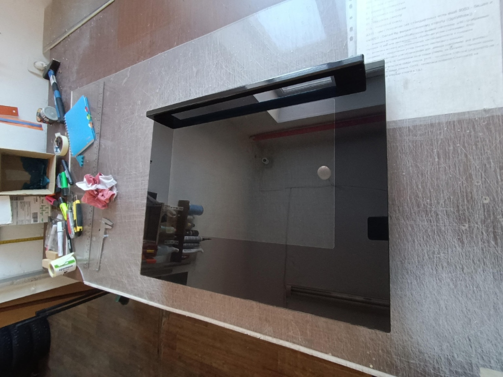
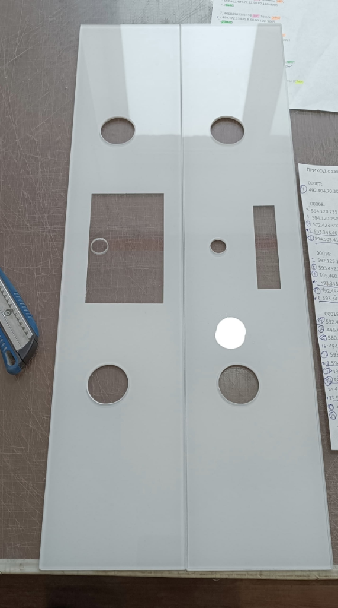
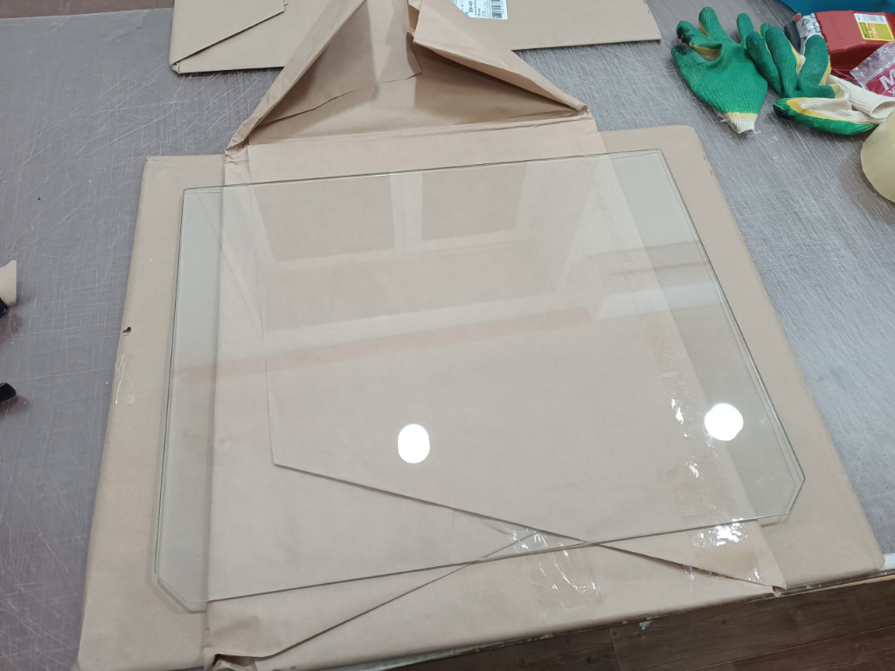
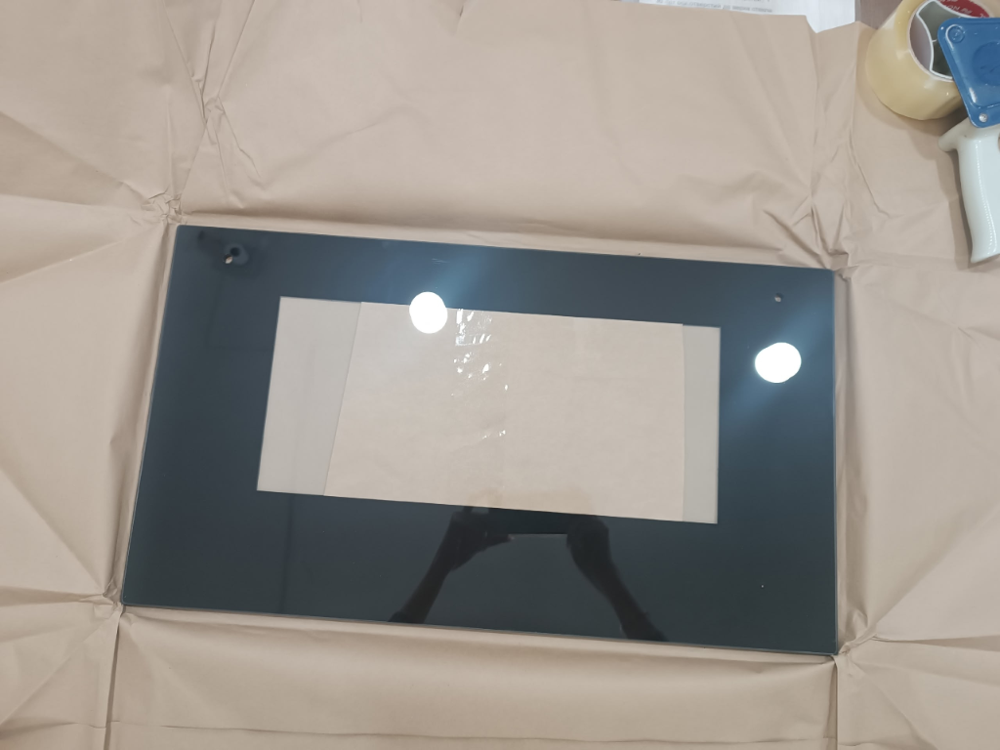
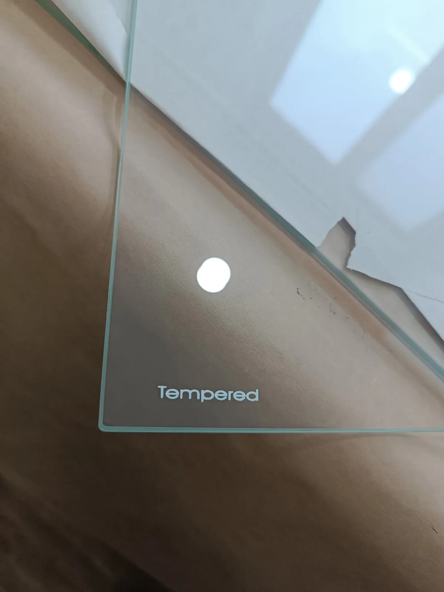
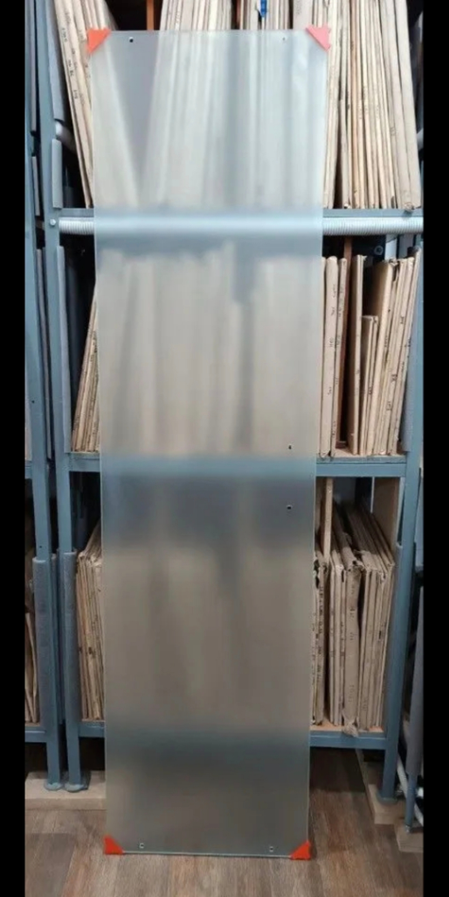
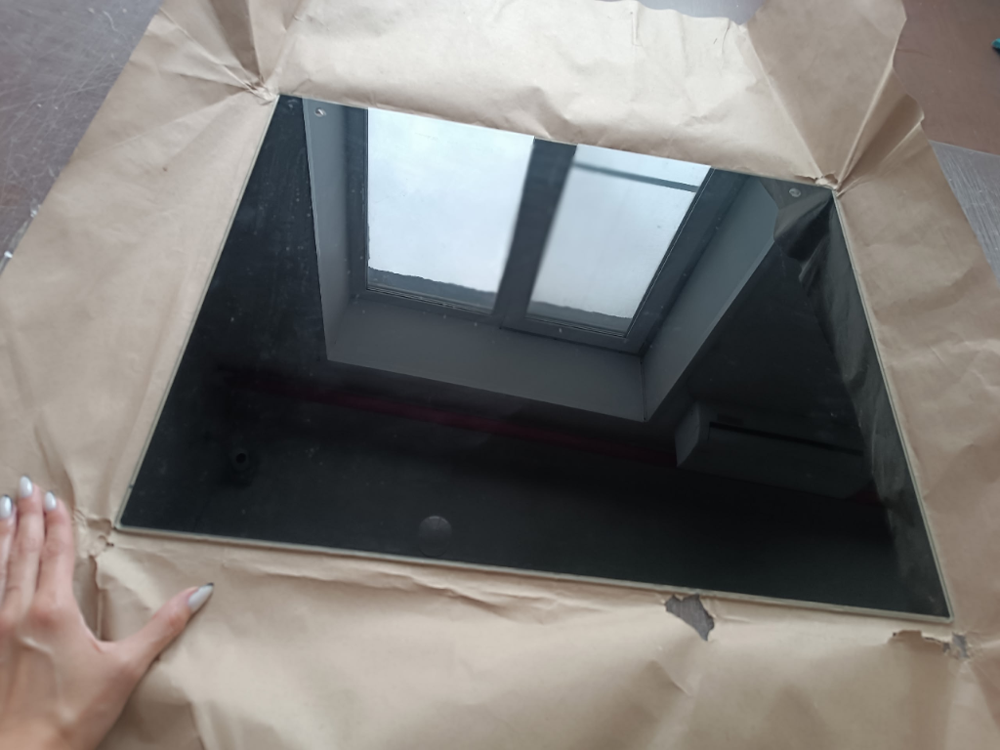

01 / ДУХОВЫЕ ШКАФЫВнешнее стекло духовки
Лицевое стекло со смотровым окном и отверстиями под ручку. Чёрная или белая термостойкая рамка, либо тонировка.
(стёкла для дверей духовых шкафов и плит, полки холодильников, душевые ширмы/перегородки, изделия из стеклокерамики)

Для бытовой техники, дома и офиса — по размерам, чертежу или образцу. Выберите нужное изделие, а мы рассчитаем стоимость и доставку.

01 / ДУХОВЫЕ ШКАФЫЛицевое стекло со смотровым окном и отверстиями под ручку. Чёрная или белая термостойкая рамка, либо тонировка.

02 / ПАНЕЛИ УПРАВЛЕНИЯТочные отверстия под переключатели и вырезы под дисплей. Полированная кромка и изготовление по вашей модели.
 03 / ЖАРОПРОЧНОЕ
03 / ЖАРОПРОЧНОЕ
Со скошенными углами под пазы (прозрачное) либо с термостойкой покраской стемалит и вырезами под фиксаторы.

04 / ТЕРМОБАРЬЕРБывает только с прямыми углами: прозрачное либо с термостойкой покраской. Защитный термобарьер двери духовки.
 05 / ПЛИТЫ
05 / ПЛИТЫ
Стекло для плит и варочных поверхностей. Размеры и вырезы под конфорки и регуляторы — по образцу или чертежу.

06 / ЗЕРКАЛЬНОЕ ТОНИРОВАНИЕВнешние закалённые стёкла с зеркальным полупрозрачным эффектом. При выключенной духовке — зеркальный глянец, при включённой подсветке — прозрачное окно. Точные отверстия под ручку.

07 / ХОЛОДИЛЬНИКИЗакалённое стекло толщиной 4–6 мм с полированной еврокромкой. Скруглённые углы и точная посадка в направляющие.

08 / ДЛЯ ДОМА И ОФИСАБезопасное закалённое стекло 6–10 мм для ванных комнат, душевых кабин, интерьерных и офисных перегородок. Прозрачные, матовые (сатинат), с полированной кромкой и вырезами.

09 / СТЕКЛОКЕРАМИКАВысокотемпературная термостойкая стеклокерамика (до 750°C) для варочных зон, каминов, печей и специализированной техники.
Внешние стекла с ручками, панели управления, внутренние стекла с покраской стемалит и прозрачные, а также примеры надёжной упаковки для отправки СДЭК по всей России.
Белый стемалит, растровое окно, отверстия под ручку
Заводская растровая шелкография и отверстия под ручку
Термостойкий растр смотрового окна духовки
Вырезы под таймер, дисплей и поворотные ручки
Отверстия под поворотные регуляторы, полированная фаска
Точное сверление и шлифовка кромки отверстия
Вырезы под ручки переключения режимов и температуры
Полированная фаска и чистая геометрия отверстия
Установленное внешнее стекло дверцы в интерьере
Замена стекла панели управления и дверцы духовки
Замена разбитого стекла панели и духовки Kaiser
Точная посадка панели под дисплей и сенсоры
Широкий белый стемалит и верхние отверстия под ручку
Широкая покраска стемалит, отверстия под ручку двери
Примерка ручки на рабочем столе перед отправкой
Партия стекол с отверстиями на упаковочном столе
Отверстия под ручку и прозрачное смотровое окно
Светлый оттенок стемалита и отверстия под ручку
Термостойкий стемалит и вырезы под защёлки
Чёрная рамка со смотровым окном по стандарту
Закаленное прозрачное стекло без скосов для дверей духовки
Радиусные пазы внизу под петли духовки
Жёсткие короба. Москва, Екатеринбург, Тюмень, СПб
Толстый пенополистирол и маркировка «Хрупкое»
Доставляем в любые города РФ без ограничений
Термостойкий стемалит, глянец и отверстия под ручку
Толщина стекла, шлифованный торец и точный диаметр отверстия
Зеркальный полупрозрачный эффект смотрового окна и термостойкая окраска стемалит
Закалённое матовое стекло сатинат с защитными демпферными уголками
Матовое светорассеивающее полотно на сборочном столе цеха
Точная геометрия по индивидуальным размерам, упаковка к транспортировке
Полированная трапециевидная еврокромка и безопасный радиус угла
Приятная бархатистая текстура, мягкое рассеивание света и приватность
Комбинированное матирование полотна душевой перегородки на складе
Чтобы стекло подошло идеально, нам достаточно знать модель вашей техники или точные размеры с расположением отверстий и вырезов.
Пришлите фото заводской таблички духовки (находится за дверцей на корпусе) или размеры старого стекла.
Проверяем цвет рамки, покраску стемалит, отверстия под ручки или переключатели, наличие на складе и срок.
Самовывоз в Челябинске по звонку либо оперативная доставка СДЭК в защитной упаковке в любой город РФ.
Если не нашли ответ — свяжитесь с нами прямо сейчас, мастер оперативно проконсультирует по вашей технике.
Мастерская и склад находятся по адресу: г. Челябинск, ул. 3-го Интернационала, 90. Посещение и самовывоз осуществляются по предварительному звонку по телефону +7 (902) 024-64-82.
Мы отправляем заказы компанией СДЭК по всей территории России — включая Москву, Московскую область, Санкт-Петербург, Урал, Сибирь, Поволжье, Юг и любые другие регионы. Стекла упаковываются в жёсткий защитный броне-короб.
Да! Мы изготавливаем закаленные стёкла для верхних панелей управления духовых шкафов и кухонных плит с высокоточным сверлением отверстий под круглые поворотные ручки-переключатели, терморегуляторы и экраны.
Промежуточные (средние) стёкла бывают исключительно с прямыми углами — прозрачные либо с покраской.
А со скошенными углами изготавливаются внутренние стёкла духовых шкафов (прозрачные под пазы крепления либо со стойкой покраской стемалит и фигурными вырезами).
Да, внешние фасадные стёкла изготавливаются строго по заводским чертежам с отверстиями под дверную ручку и крепления петель, с широкой термостойкой покраской стемалит (чёрный или белый цвет).
Да! Мы производим жаропрочные стекла для микроволновых печей, кухонных плит и варочных поверхностей, а также прочные полки из закаленного стекла нужной толщины с полированной еврокромкой для любых холодильников.